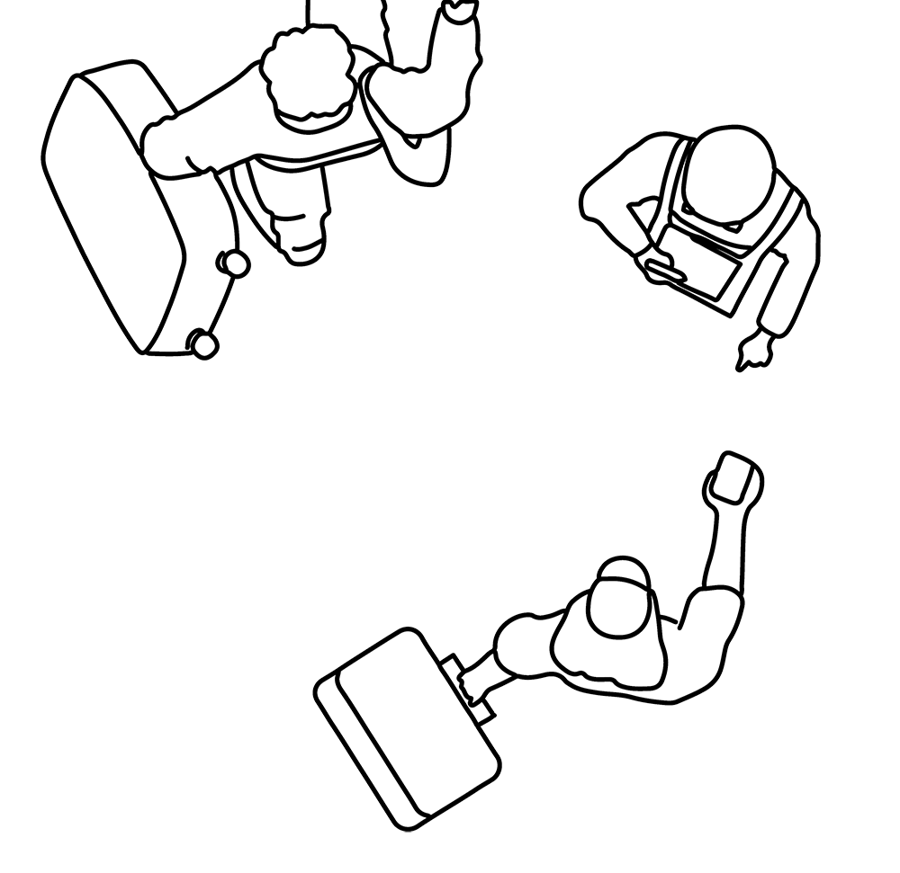
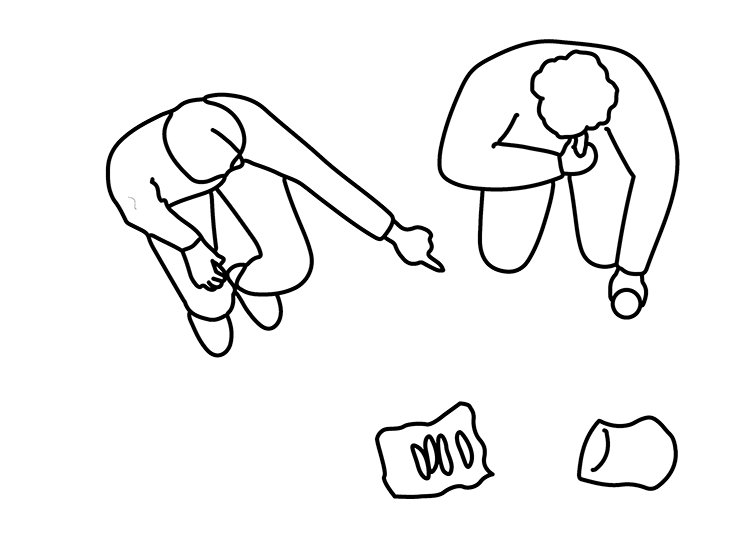
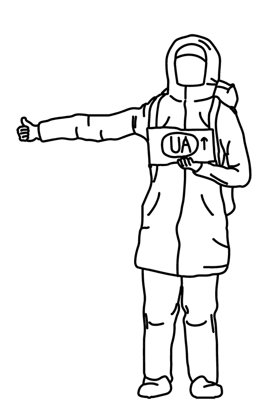
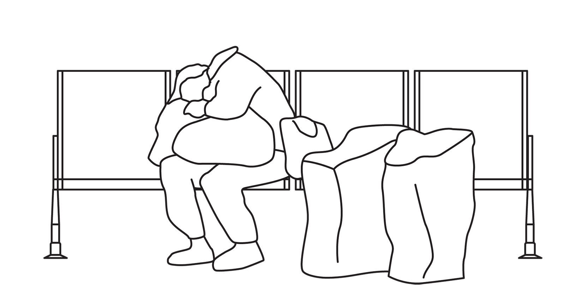

welcome _ willkommen _ вітаю
vítejte _ witam _ vitajte
This page is a product of my Master's Thesis in Architecture, Spatial Practices of Moving People, which deals with the experiences, challenges, and adaptation methods of people moving between the East and West of Europe in 2020s.

The work has discovered a largely unsatisfactory state of spaces of transit used by these people, who often lack economic or democratic agency in them. The work aims to raise attention to related topics among actors of spatial production.

As one of the products, I have prepared a collection of entourages that I created for my drawings, linked with real people and situations I have met, observed, and documented.
I will be looking forward to your feedback at the project's Instagram.


Credit: movingpeople.github.io